Uživatelské rozhraní
TecZone využívá inovativní design uživatelského rozhraní s kódovým názvem Clarity. Při práci v TecZone se vám zobrazí přehledné, minimalistické zobrazení.
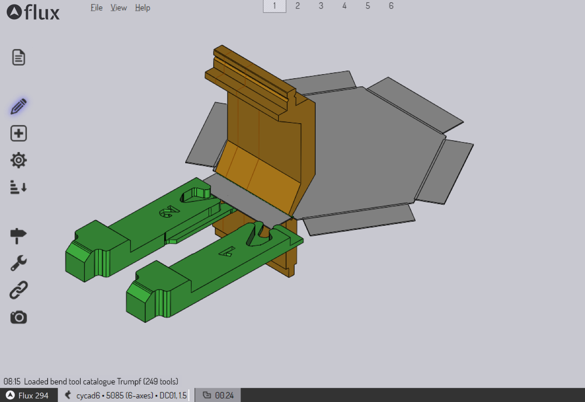
V rozhraní TecZone nenajdete:
-
Mnoho řádků naskládaných ikon, z nichž pouze malý počet je relevantní pro aktuální kontext.
-
Hluboké struktury menu s tucty položek.
-
Menu uživatelského rozhraní zabírají hodně místa v horní části obrazovky.
Rozhraní Clarity naopak funguje na principu Vybrat, pak Obsluha.
-
Vybírejte položky kliknutím na ně.
-
Zobrazí se panel Clarity obsahující různé Settings a operace pro vybranou věc.
-
Panel často obsahuje některé ovládací prvky pro rozšíření výběru výběrem dalších podobných položek.
-
Panel často obsahuje také ovládací prvky pro navigaci mezi různými věcmi, se kterými pracujete.
Tyto zásady uživatelského rozhraní jsou konzistentní ve všech pracovních módech TecZone. Ať už čistíte 3D model, uspořádáváte díly na optimálně rozmístěném plechu nebo upravujete nastrojení ohraňovacího lisu, budete používat stejnou sadu klíčových konceptů. Abychom tyto abstraktní myšlenky zkonkretizovali, pojďme se podívat na rozhraní Clarity v akci (jako příklad použijeme editor reportů TecZone a Ohyb TecZone Bend).
Prohlídka s průvodcem
Toto je stručná prohlídka toho, jak funguje rozhraní Clarity. Existuje jen několik jednoduchých konceptů, které se opakují všude v TecZone, a pochopení těchto konceptů znamená, že většinu TecZone lze použít bez velkého čtení nebo školení. Jinými slovy, pokud si přečtete tuto část, můžete přeskočit čtení zbytku uživatelské příručky TecZone!
Vzorový report
Více informací o vytváření a úpravách šablon reportů naleznete v další části. Prozatím si představíme některé pojmy používané v tomto reportu, abychom je mohli použít k ilustraci konceptů rozhraní Clarity.
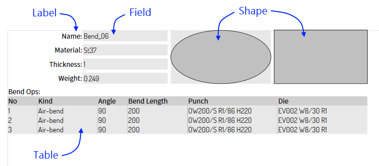
Obrázek výše ukazuje některé typy entit, které lze umístit do reportu.
-
Textové pole je jednoduchý text; můžete nastavit různé vlastnosti, jako je písmo, zarovnání textu a barva.
-
Pole zobrazuje některé skutečné údaje získané z podkladové části.
-
Tvar je jednoduchá geometrie (například elipsa, obdélník nebo čára), kterou lze použít k přidání pozadí, zvýraznění nebo oddělovačů do reportu.
-
Tabulka zobrazuje data z podkladové části, která má tabulkovou formu (například tabulku s informacemi). V tomto příkladu vidíme seznam procesů ohýbání v tomto dílu a pro každý z nich jsou zobrazeny některé atributy.
S těmito základními informacemi o entitách reportů můžeme nyní začít prozkoumávat rozhraní Clarity.
Princip: Klikněte na něco, co chcete upravit
Klikněte na pole a zobrazí se panel Clarity (v této diskusi jej budeme nazývat pouze panel). Zde je anotovaný diagram, jak by to mohlo vypadat:
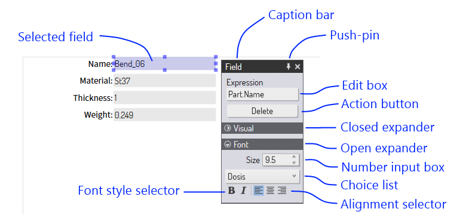
Kliknutím na pole jej vyberete a zobrazí se panel pro jeho úpravu. Zde jsou některé prvky, které vidíme v tomto panelu:
-
Lištu s popisky lze použít k přemístění panelu (můžete kliknout kdekoli na pozadí panelu a přetáhnout jej). Pokud nastavíte připínáček, panely se vždy otevřou na tomto místě na obrazovce. Jinak se panely otevřou blízko umístění kurzoru myši.
-
Editovací pole, pole pro zadávání čísel, výběrové seznamy, volby písma a zarovnání představují různé způsoby, jak lze nastavení pole zobrazit a upravit.
-
Akční tlačítka slouží k provádění různých operací s vybraným objektem. V tomto případě lze pole z reportu odstranit kliknutím na tlačítko Vymazat.
-
Některé panely mohou obsahovat mnoho prvků. Aby se snížila nepřehlednost, panely jsou rozděleny do sekcí pomocí rozbalovacích menu. Na obrázku výše vidíte, že rozbalovací menu Ilustrace je zavřené (skryje všechna nastavení v dané sekci), zatímco rozbalovací menu Font je otevřené. Kliknutím na libovolné místo v rozbalovacím menu můžete otevřít nebo zavřít sekci.
Princip: Vyberte více položek a upravte je najednou
Další entity můžete vybrat tak, že při kliknutí na ně podržíte klávesu Shift. Při výběru více entit se zobrazí panel, který umožňuje upravit nastavení všech entit současně.
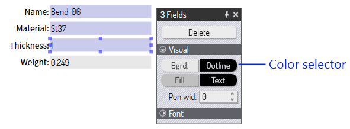
Na obrázku výše máme 3 pole, která jsme vybrali pomocí mechanismu Shift+Click. Zobrazený panel nám umožňuje upravit nastavení všech těchto tří polí najednou. (Zde máme rozbalovací menu Ilustrace otevřené a rozbalovací menu Písmo uzavřené). Po úpravě nastavení barvy Bgrd a šířky pera vypadá report takto:
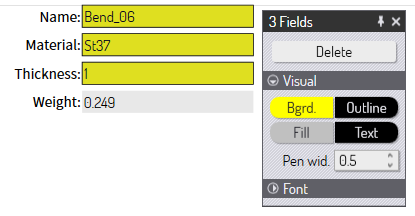
Provedené změny se aplikují na všechny vybrané položky. V tomto scénáři s více úpravami si všimněte, že nastavení Výraz není zobrazeno; jedná se o jedno z nastavení, které pravděpodobně nebudeme chtít upravovat společně pro sadu polí (nechtěli bychom, aby 3 pole zobrazovala stejnou hodnotu z části). Nastavení, která by obvykle měla odlišné hodnoty pro každou entitu, se v takových panelech pro skupinovou úpravu nezobrazují.
Princip: Můžete společně upravovat entity různých typů
Ve výše uvedeném příkladu jsme vybrali tři entity stejného typu. Co se stane, pokud vybereme entity různých typů? Podívejme se. Nejprve, takto vypadá panel pro entitu Tvar:
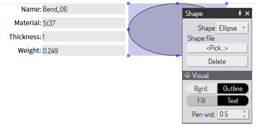
Pokud vybereme současně Pole a Tvar, zobrazí se tento panel:
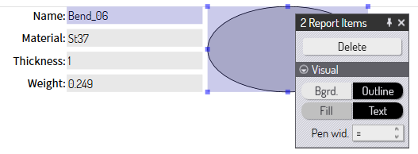
-
V záhlaví se nyní zobrazují 2 položky reportu, protože upravujeme položky reportu, ale ne stejného typu.
-
Zobrazena jsou pouze společná nastavení mezi Pole a Tvar (v tomto případě se jedná pouze o nastavení v sekci Vizuální).
Princip: Vícenásobný výběr může poskytnout další operace
Kromě společné podmnožiny nastavení a operací dostupných pro více objektů může vícenásobný výběr někdy představovat nové operace nebo nastavení, které nejsou dostupné pro jednotlivé objekty. Uveďme příklad z ohýbání, abychom to ilustrovali. V zobrazení ohybu se po kliknutí na ohyb zobrazí panel pro úpravu nastavení ohybu a provedení některých operací s ním:
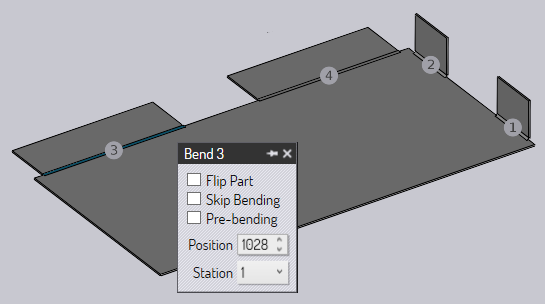
Obrázek výše ukazuje panel pro ohyb 3. Nyní podržte tlačítko Shift a vyberte také ohyb 4. Panel, který se nyní zobrazuje, vypadá takto:
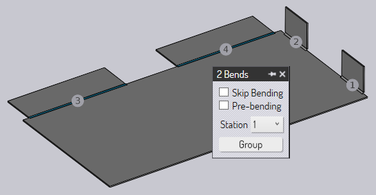
Některá nastavení můžeme upravovat společně (nastavení přeskočení ohýbání nebo nastavení čísla stanice). Zde však vidíme nové tlačítko s názvem Seskupení. Jelikož jsou vybrány dva ohyby a ty jsou kolineární, mohly by být seskupeny do jednoho procesu ohýbání. Toto je detekováno automaticky a zobrazí se toto nové tlačítko Seskupení; tato operace není k dispozici, pokud je vybrán pouze jeden ohyb. Kliknutím na toto tlačítko se oba ohyby seskupí, jak je vidět na obrázku níže.
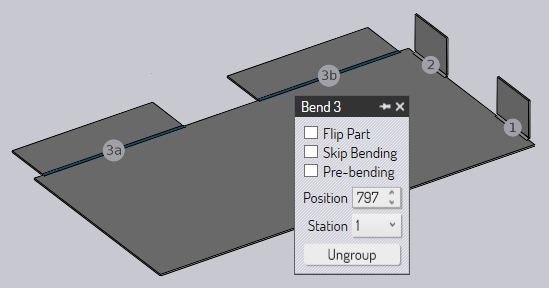
Nyní jsou v této části pouze 3 procesy ohýbání. Také ohyb 3 je nyní seskupený ohyb a zobrazí se nové tlačítko: Oddělení.
Princip: K úpravě výběru použijte podpanel Výběr
Panel Clarity má často v dolní části podpanel Vybration. Tento panel obsahuje několik tlačítek, pomocí kterých lze výběr různými způsoby upravit. Obvykle jsou k dispozici tlačítka pro výběr dalších objektů, které jsou si nějakým způsobem podobné. Například některé způsoby, jak rozšířit výběr, by mohly být:
-
Vyberte všechna pole v reprotu.
-
Vyberte všechny polyčáry ve stejné vrstvě.
-
Vyberte všechny údery razníkem v části, které používají stejný děrovací nástroj.
-
Vyberte všechny ohyby, které používají stejné nastavení.
Zde je příklad z editoru reportů, kde se zobrazuje výběrový panel po kliknutí na pole v reportu:
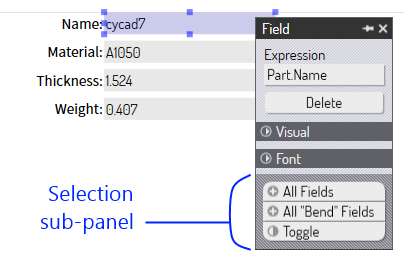
Podpanel pro výběr má výrazné vzorované pozadí a zaoblená tlačítka. V tomto příkladu vidíte tlačítka pro výběr Všechna pole, výběr Všechna pole ohybů (pole související s daty CAM ohybu) a Přepnout (aktuální výběr).
Skutečný seznam tlačítek pro výběr zobrazených v tomto podpanelu se bude lišit v závislosti na kontextu. Zjistíte, že nejběžnější scénáře lze pomocí těchto výběrových tlačítek velmi pohodlně řešit.
Princip: Pomocí podpanelu Navigace procházejte strom entit
Sada entit v části, sestavě nebo rozvržení má často hierarchickou strukturu. Tomuto říkáme Strom entit. Struktura je obvykle znázorněna jako obrácený strom, s „nadřazeným“ objektem nahoře a podřízenými objekty pod ním. Zde je příklad stromu entit v reportu.
-
Report může obsahovat více položek. Některé z těchto položek mohou být tabulky.
-
Tabulka v reportu může obsahovat více sloupců.
V tomto stromu jsou tedy 3 úrovně a grafické znázornění tohoto stromu by mohlo vypadat následovně:
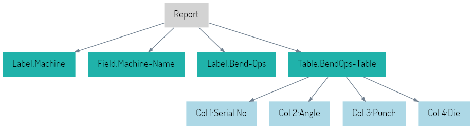
Tato zpráva obsahuje 2 štítky, 1 pole a 1 tabulku. Tabulka má 4 sloupce. Když klikneme na tabulku, zobrazí se nám panel, který vypadá takto:
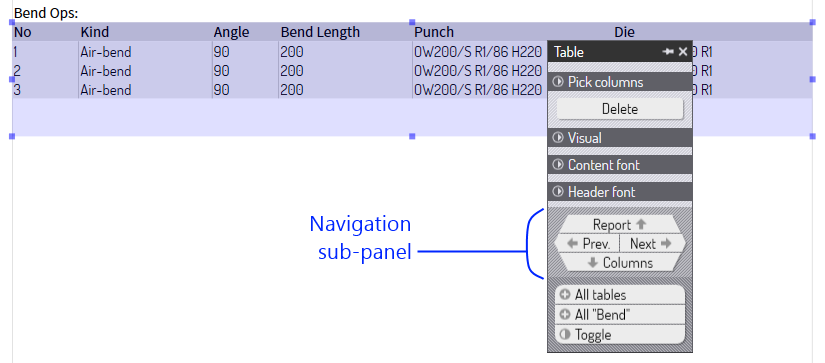
Navigační panel obsahuje směrová navigační tlačítka pro procházení stromem entit. Stejně jako výběrový panel má i navigační podpanel charakteristické texturované pozadí a objevuje se ve spodní části panelu, ale těsně nad výběrovým podpanelem.
Tlačítka Zpět. a Další se pohybují mezi položkami na stejné úrovni stromu entit. Kliknutím na tato tlačítka tedy vyberete další položky v přehledu, například položky Textové pole nebo položky Pole v přehledu.
Kliknutím na Seřizovací plán se přesune nahoru z tabulky do nadřazené úrovně – samotný Report. Panel, který se zobrazí po kliknutí na tlačítko Seřizovací plán, obsahuje některá nastavení související se samotným reportem, jako je velikost papíru a okraje:
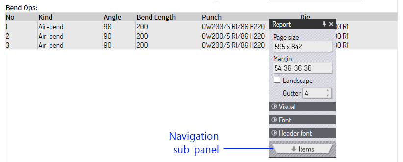
Nyní upravujeme report; nacházíme se v kořenovém adresáři stromu entit. Není kam směřovat, pouze dolů, a proto má podpanel navigace pouze jedno tlačítko (Položky ) pro přechod dolů na seznam položek. Kliknutím na tuto možnost se tabulka znovu vybere.
Z tabulky nás tlačítko navigace pro pohyb dolů Sloupce posune o jednu úroveň dolů a přepne nás do režimu úpravy sloupců. Toto se stane, když klikneme na navigační tlačítko Sloupce v panelu tabulky:
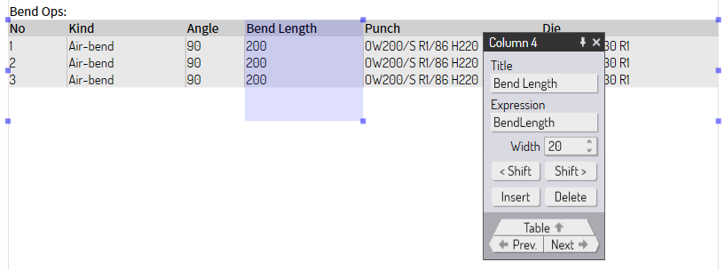
Zobrazí se nastavení vybraného sloupce v tabulce. Kliknutí na tlačítka Zpět. a Další nyní přesouvá výběr mezi sloupci v tabulce, protože to je úroveň ve stromu, se kterou pracujeme. Není zde žádné tlačítko pro navigaci dolů, protože se jedná o nejnižší úroveň ve stromu. Tlačítko Tabulka posune o úroveň výš a my se vrátíme k úpravám celé tabulky.
Souhrn
-
Klikněte na něco, co chcete upravit.
-
Vyberte více položek a poté je můžete upravit najednou.
-
Můžete také společně upravovat entity různých typů.
-
Vícenásobný výběr může poskytovat další nastavení a operace.
-
Pomocí podokna Výběr můžete inteligentně upravit výběr.
-
Pomocí podpanelu Navigace procházejte strom entit.